Proef Amerika in Wassenaar
Burgers van de grill, sappige spareribs, luchtige pancakes en romige milkshakes. Aan het begin van de Langstraat, voor wie wil winkelen én genieten.
Di t/m za open vanaf 10:00 · Langstraat 121
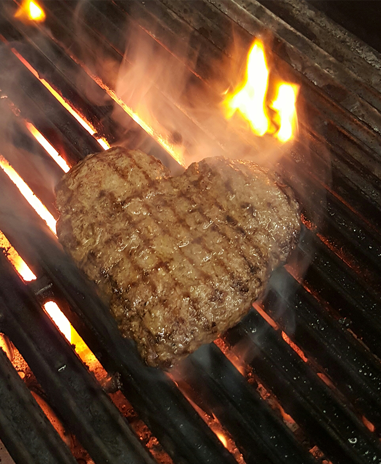
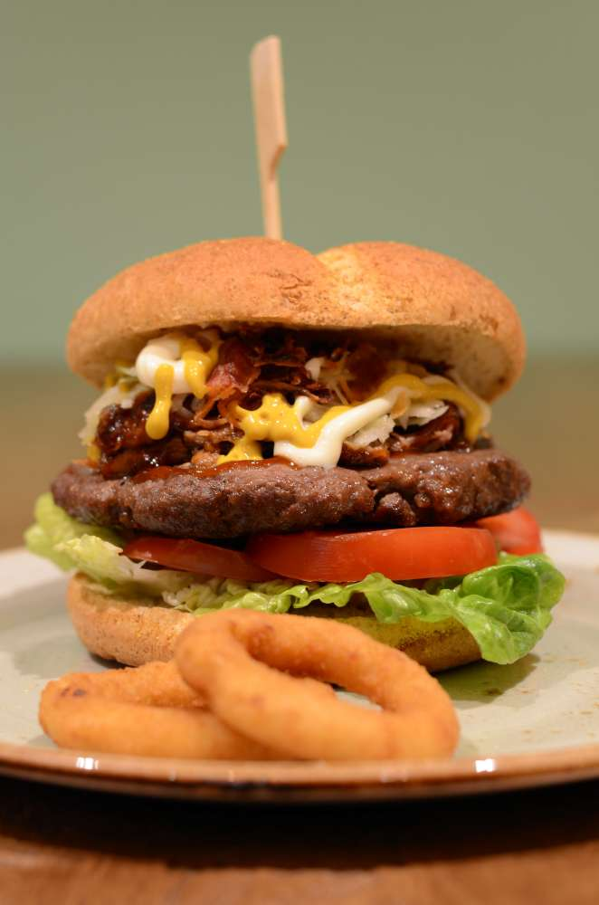
American Lunch & Diner
Stap binnen bij POPS en laat je meenemen naar de smaken van de Amerikaanse keuken. Van klassiek comfort food tot verrassende favorieten: hier draait alles om genieten, op elk moment van de dag.
De hele dag door zijn de milkshakes, zoete taarten, popcorn, cinnamon buns en (h)eerlijke koffie en thee favoriet. Als lunch kies je uit gegrilde burgers in alle soorten en maten, frisse salades, clubsandwiches of luchtige Amerikaanse pannenkoeken. Op de dinerkaart vind je mals gegrild vlees, sappige spareribs, Southern fried fish en vegetarische klassiekers.
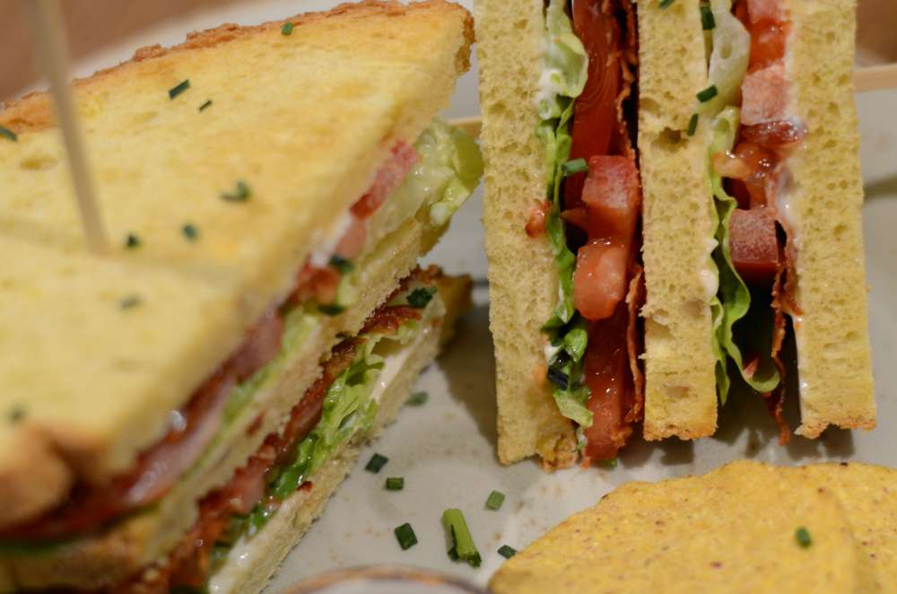
Lunch
Burgers, salades, soep, clubsandwiches, hotdogs en pancakes.
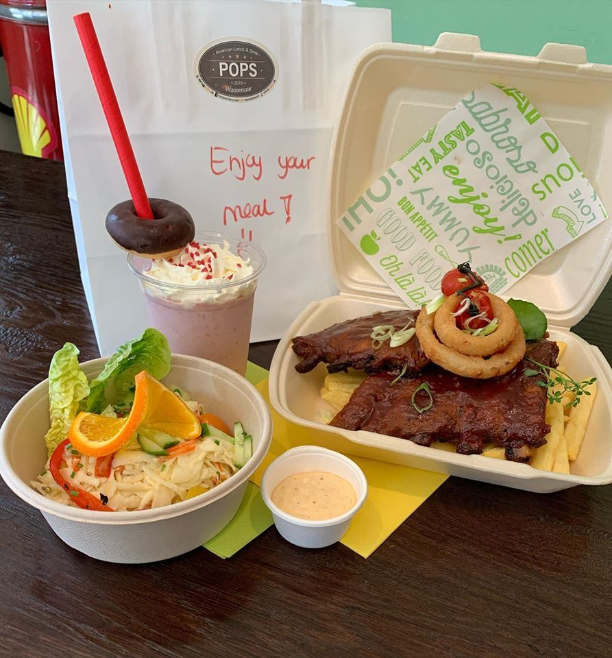
Diner
Steak, spareribs, mixed grill, burgers, vis of vegetarisch, met friet en garnituur.
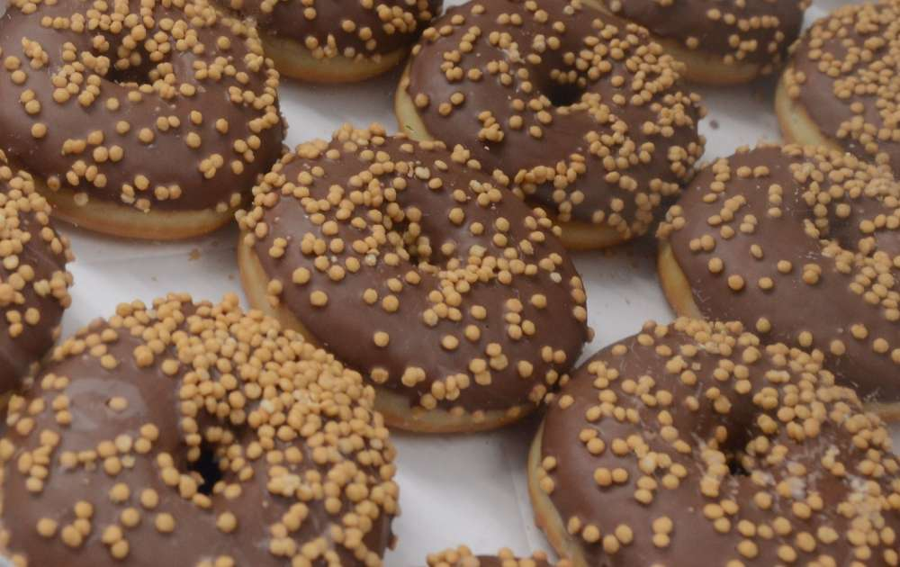
Zoet
Milkshakes in heel veel smaken, Amerikaanse taarten en churros.
POPS voor thuis
Zin in een POPS diner op de bank? Alles van de dinerkaart kun je afhalen of laten bezorgen. Liever iets voor de lunch? De lunchkaart bestel je tussen 12:00 en 17:00.
- Bezorgen vanaf € 20,00
- Gratis bezorgd boven € 30,00
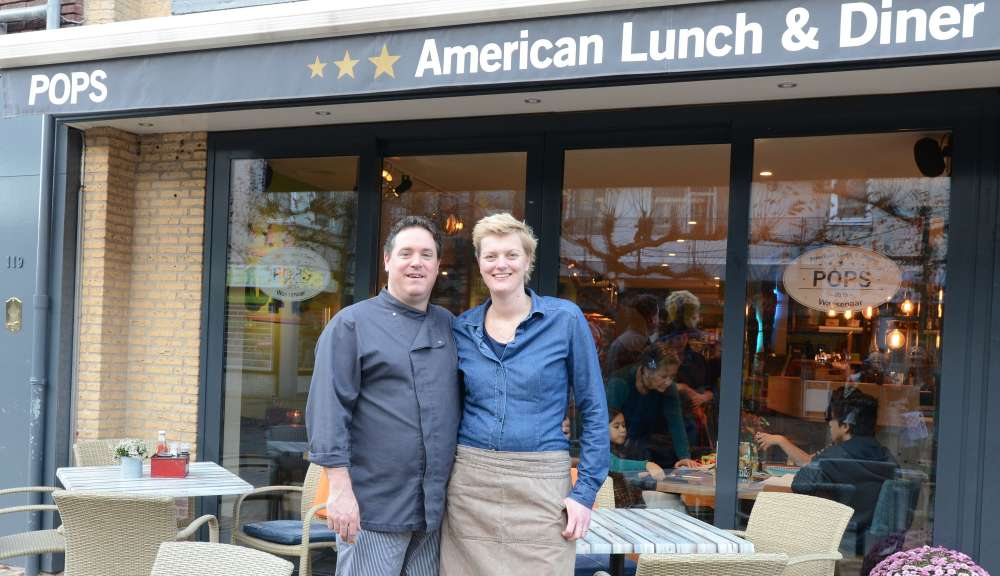
Een droom in vervulling
Voor Pol en Petra is POPS meer dan een restaurant. Het is de plek waar hun passie voor horeca en gastvrijheid samenkomt: lekker kokkerellen en gasten met aandacht verwelkomen.
Pol staat in de keuken. Hij zorgt dat elk stuk vlees perfect gegrild wordt, legt de laatste hand aan nieuwe gerechten en stelt met gemak een heerlijk buffet samen. Petra regelt de bediening, maakt heerlijke koffie en cocktails en zorgt ervoor dat gasten met een tevreden gevoel naar huis gaan.
Met POPS ging een droom in vervulling: een eigen zaak, een moderne American Lunch & Diner. Aan het begin, of het einde, van de leukste en langste winkelstraat van Wassenaar: Langstraat 121.
Catering & privé partijen
Op zoek naar een unieke locatie voor jouw feest, borrel of bijeenkomst? Bij POPS beleef je de sfeer van een echt Amerikaans restaurant: stoer, gezellig en altijd vol smaak. Het restaurant is volledig af te huren, van verjaardagen en bedrijfsborrels tot kinderfeestjes.
Ook voor catering zit je goed: sappige burgers, loaded fries, BBQ-gerechten en sharing platters. Een informele borrel, een uitgebreid diner of een compleet verzorgd feest, alles wordt afgestemd op jouw wensen.
Liever op een eigen locatie? Geen probleem, POPS komt naar je toe.
Vraag de mogelijkheden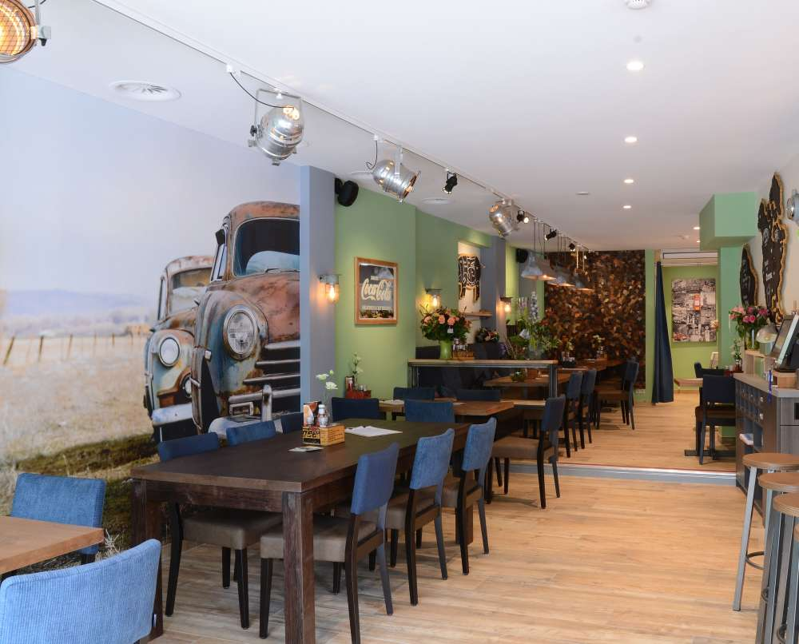
Bij POPS
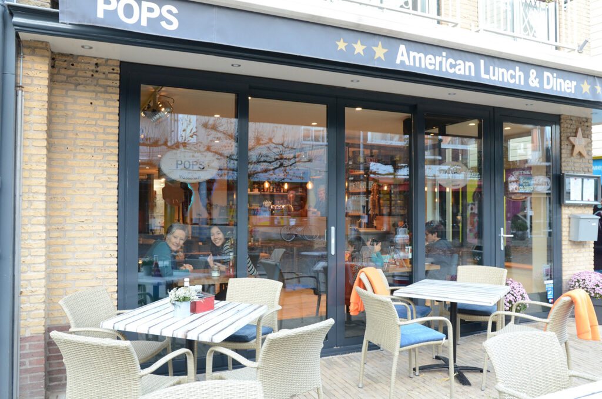
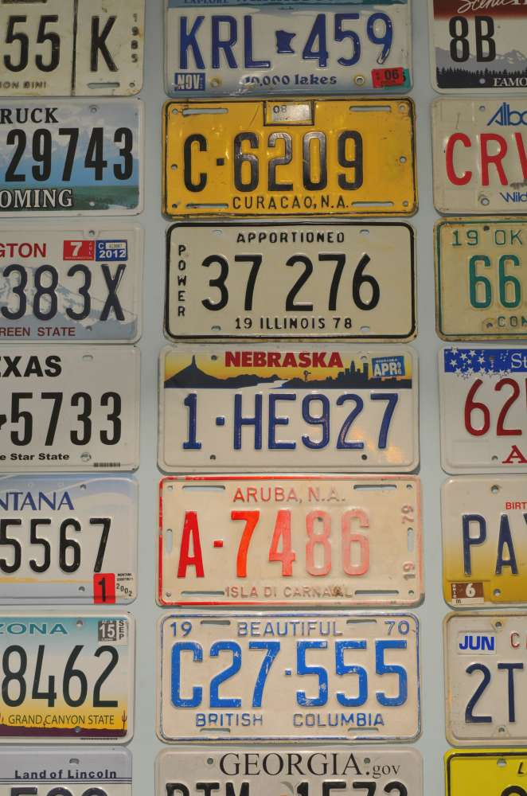
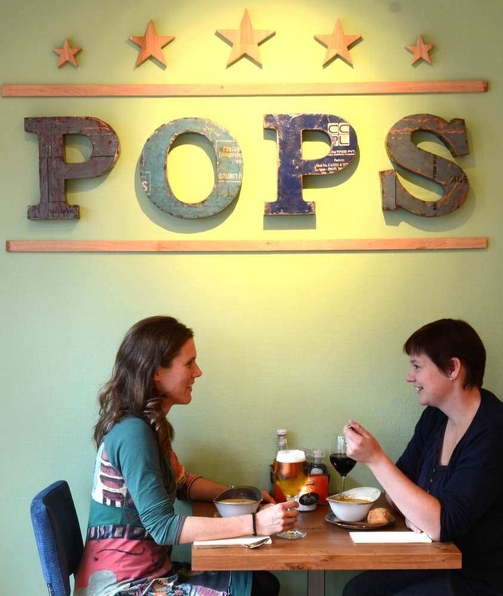
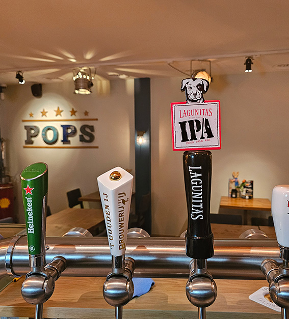
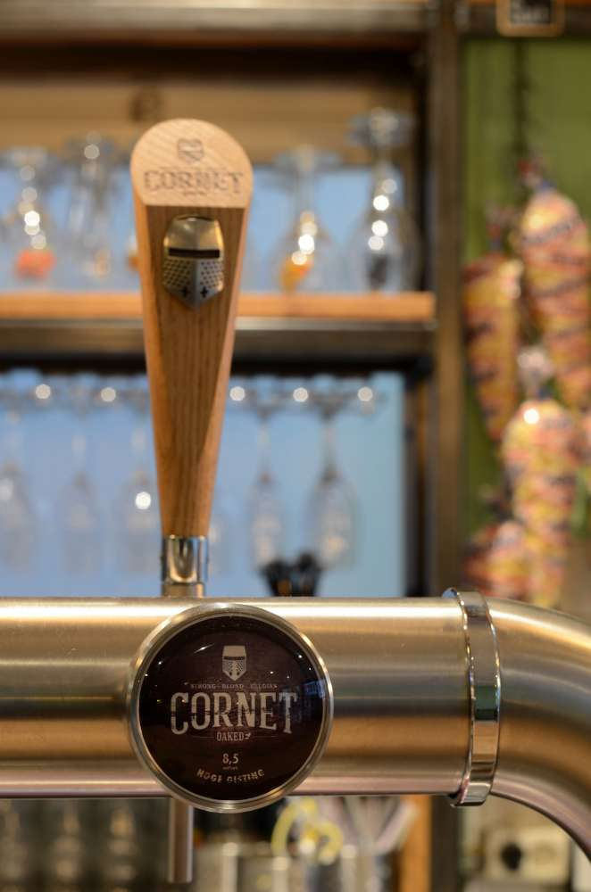
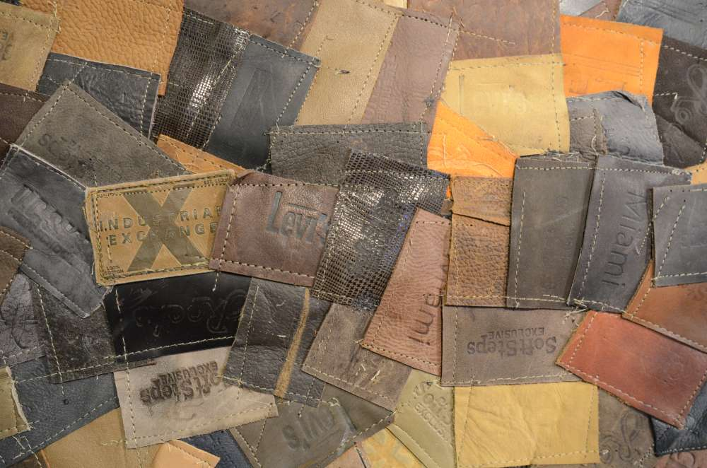
Openingstijden
| Dag | Open | Keuken |
|---|---|---|
| Maandag | Gesloten | |
| Dinsdag | 10:00 - 21:00 | 10:30 - 20:00 |
| Woensdag | 10:00 - 21:00 | 10:30 - 20:00 |
| Donderdag | 10:00 - 21:00 | 10:30 - 20:00 |
| Vrijdag | 10:00 - 21:30 | 10:30 - 20:30 |
| Zaterdag | 10:00 - 21:30 | 10:30 - 20:30 |
| Zondag | Gesloten | |
Reserveren & contact
Een tafel reserveren? Bel 070 - 7799978 of mail naar info@pops.nl.
Wil je een familierecept delen, een compliment geven of heb je een vraag? Stuur gerust een mailtje.
POPSLangstraat 121
2242 KL Wassenaar